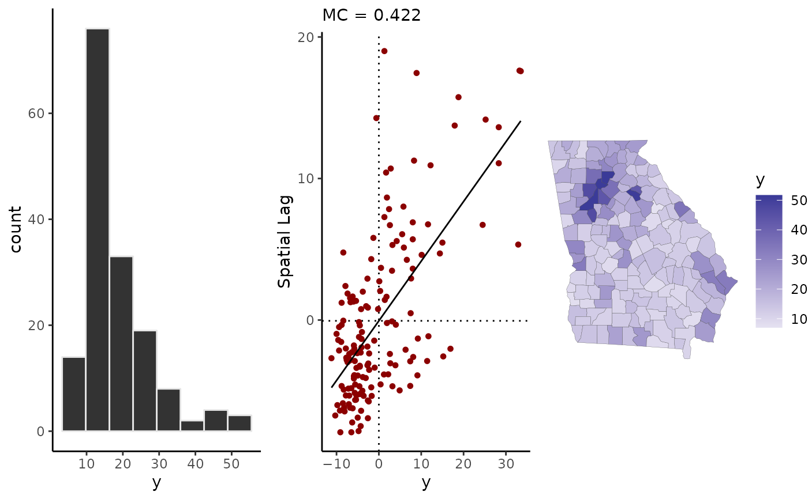

Visual diagnostics for areal data and model residuals
sp_diag( y, shape, name = "y", plot = TRUE, style = c("W", "B"), w = shape2mat(shape, match.arg(style)), binwidth = function(x) 0.5 * sd(x), ... ) # S3 method for geostan_fit sp_diag( fit, shape, name = "Residual", plot = TRUE, style = c("W", "B"), w = shape2mat(shape, match.arg(style)), binwidth = function(x) 0.5 * stats::sd(x), ... ) # S3 method for numeric sp_diag( y, shape, name = "Residual", plot = TRUE, style = c("W", "B"), w = shape2mat(shape, match.arg(style)), binwidth = function(x) 0.5 * stats::sd(x), ... )
| y | A numeric vector. |
|---|---|
| shape | An object of class |
| name | The name to use on the plot labels; default to "y" or, if |
| plot | If |
| style | Style of connectivity matrix; if `w` is not provided, `style` is passed to |
| w | An optional spatial connectivity matrix; if not provided, one will be created using |
| binwidth | A function with a single argument that will be passed to the `binwidth` argument in |
| ... | Additional arguments passed to |
| fit | A fitted `geostan` model (class `geostan_fit`). |
A grid of spatial diagnostic plots. When provided with a numberic vector, this function plots a histogram, Moran scatter plot, and map. When provided with a fitted `geostan` model, the function returns a histogram of residuals, a histogram of Moran coefficient values calculated from the joint posterior distribution of the residuals, and a map of the mean posterior residuals (means of the marginal distributions).
If `plot = TRUE`, the `ggplots` are drawn using grid.arrange; otherwise, they are returned in a list. For the `geostan_fit` method, the underlying data for the Moran coefficient will also be returned if `plot = FALSE`.
me_diag, mc, moran_plot, aple
